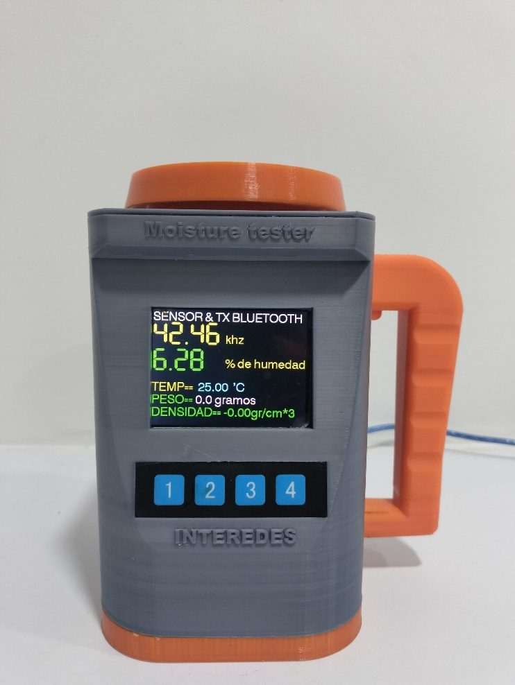

NC2023/0018502
PATENTEPATENTE - LARINGOCEL
DISPOSITIVO CILÍNDRICO PARA DETERMINAR LA CAPACITANCIA DE DISTINTOS MATERIALES DIELÉCTRICOS, A TRAVÉS DE UN SENSOR.
- Inventor
- Edwin Giovani Marín – Interedes S.A.S
- Sector
- Electricidad y Electrónica
- Página Web
- Abrir enlace ↗
- Contacto
- 📞 3162081185